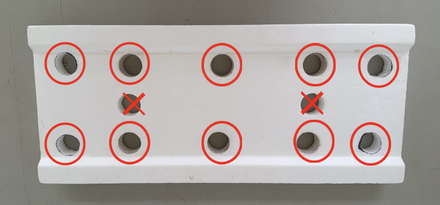

← 戻る
🌿 ハーブ栽培・出荷マニュアル
※ パクチーは出荷終了
① 播種数
🌿 バジル
播種：
90培地
32穴へ：合格品
64培地
（2ボード）
🥬 ワイルドルッコラ
播種：
130培地
32穴へ：合格品
96培地
（3ボード）
必須
不合格品は必ず廃棄！
（ボードが足りなくなるため）
② 播種方法
0日目
播種
1培地ごとに播種
🌿 バジル
10粒
／培地 🥬 ルッコラ
8粒
／培地
水のみ・黒い板をかぶせて遮光
3日目
遮光板を外す
光に当てる
例：1日播種→4日に外す
12日目
選別 → 32穴へ移植
各培地から芽が
5本以上
あるものだけ合格
③ 工程
🌿 バジル
播種
12
日間
↓
32穴
10
日間
↓
10穴
刈取まで
🥬 ワイルドルッコラ
播種
12
日間
↓
32穴
10
日間
↓
10穴
刈取まで
④ 移植（32穴 → 10穴）

10穴ボード
バジル・ルッコラともに
32穴ボード → 10穴ボード
に移植
移植が多すぎる日は、古い順に
2日に分けて移してOK
⑤ 刈取・出荷
大きい順に並んでいるので
大きい方から刈取
出さないもの（エラー）
：茎の変色・黒い点があるもの
ルッコラ
蕾は袋詰め時にカット
（パウチ後に見つけた場合はそのままでOK）
📏 袋の高さは
35cm
まで
📦 袋詰めは
縦置きで統一
注意
バジル
衝撃で黒くなりやすい
パウチは
刈取日
に行うこと
⑥ 出荷基準（重量）
パッケージの
相鉄マークの上
までハーブが届く高さ
現在の目安：
1株 25g
（バジル・ワイルドルッコラ共通）
本来の目標：40g前後。今後大きくしながら戻していく